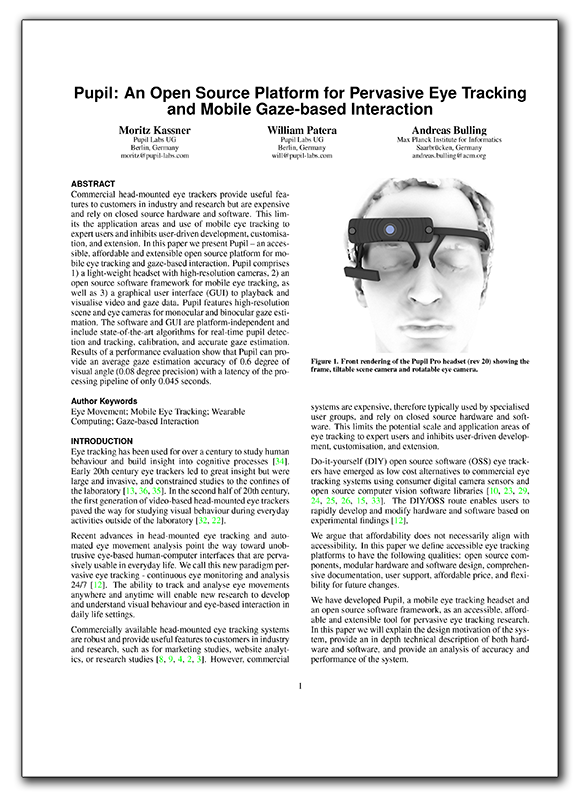

{% mark excerpt -%}
{%- endmark %}

{% mark body -%}
We just completed a draft of a technical report on Pupil titled - *Pupil: An Open Source Platform for Pervasive Eye Tracking and Mobile Gaze-based Interaction* - have released it on arxiv.org. 

You can download the paper from arxiv.org at the permalink: [http://arxiv.org/abs/1405.0006](http://arxiv.org/abs/1405.0006 "Pervasive Eye Tracking and Mobile Gaze-based Interaction")

If you're new to Pupil, we think that the paper would be a good introduction and the place to start. If you are already using Pupil, and want to gain insight into some of our hardware and software design decisions, software structure and key functions, and performance evaluation - please take a look at the paper.  

<div class="row">
	<a href="http://arxiv.org/abs/1405.0006" target="_blank"></a>
</div>

## Abstract

Commercial head-mounted eye trackers provide useful features to customers in industry and research but are expensive and rely on closed source hardware and software. This limits the application areas and use of mobile eye tracking to expert users and inhibits user-driven development, customization, and extension. In this paper we present Pupil -- an accessible, affordable, and extensible open source platform for mobile eye tracking and gaze-based interaction. Pupil comprises 1) a light-weight headset with high-resolution cameras, 2) an open source software framework for mobile eye tracking, as well as 3) a graphical user interface (GUI) to playback and visualize video and gaze data. Pupil features high-resolution scene and eye cameras for monocular and binocular gaze estimation. The software and GUI are platform-independent and include state-of-the-art algorithms for real-time pupil detection and tracking, calibration, and accurate gaze estimation. Results of a performance evaluation show that Pupil can provide an average gaze estimation accuracy of 0.6 degree of visual angle (0.08 degree precision) with a latency of the processing pipeline of only 0.045 seconds.

## Citations

If you're using Pupil in your research, please cite our paper. We discuss citations on the wiki here: [https://github.com/pupil-labs/pupil/wiki/Academic-Citation](https://github.com/pupil-labs/pupil/wiki/Academic-Citation)
{%- endmark %}
